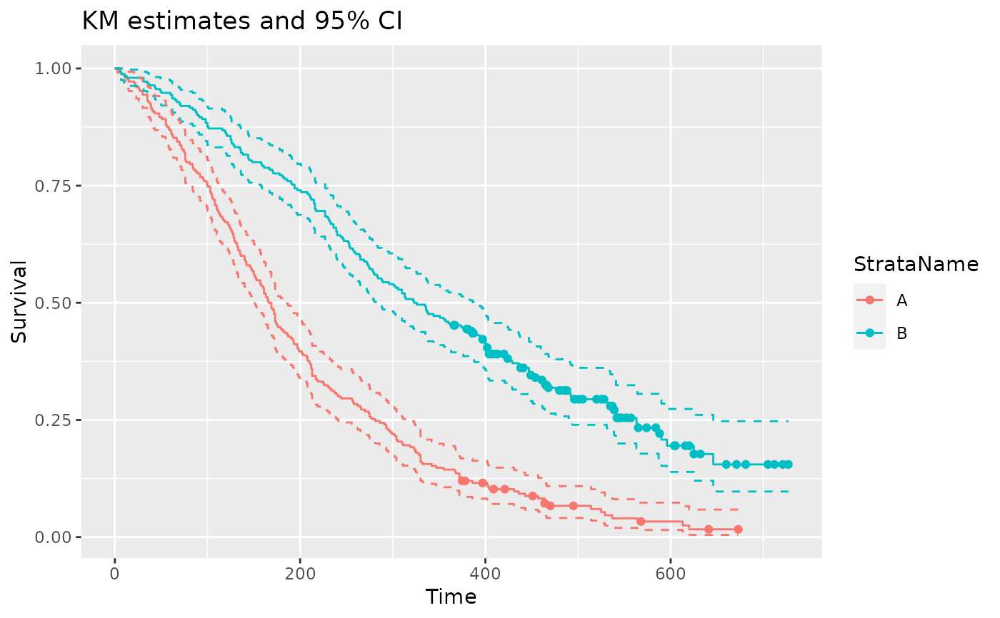
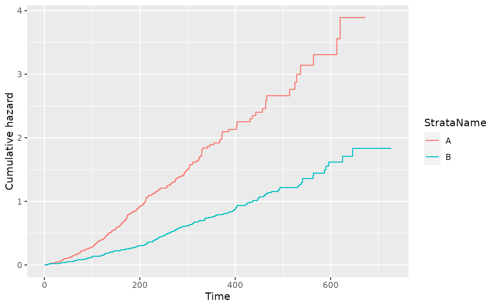
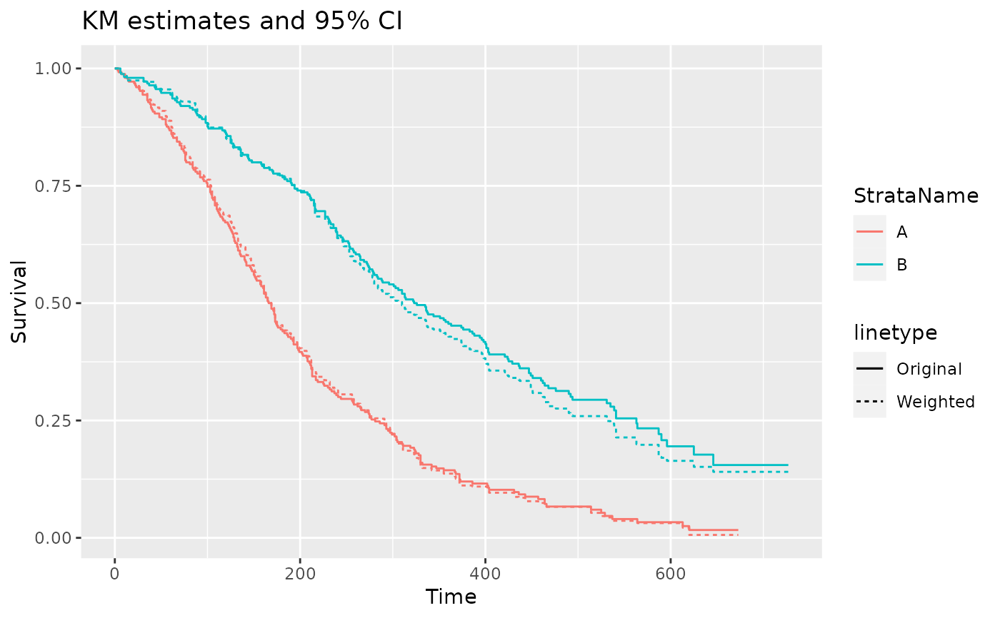

summaryKM.RdExtract information about non-parametric survival models
summaryKM(
data,
time_var,
event_var,
weight_var = "",
strata_var,
int_name,
ref_name,
types = c("survival", "cumhaz", "median", "rmst"),
t = NULL,
ci = FALSE,
se = FALSE,
...
)A data frame containing individual patient data for the relevant time to event outcomes.
Name of time variable in 'data'. Variable must be numerical and >0.
Name of event variable in 'data'. Variable must be numerical and contain 1's to indicate an event and 0 to indicate a censor.
Optional name of a variable in "data" containing case weights.
Name of stratification variable in "data". This is usually the treatment variable and must be categorical. Not required if only one arm is being analyzed.
Character to indicate the name of the treatment of interest, must be a level of the "strata_var" column in "data", used for labelling the parameters.
Character to indicate the name of the reference treatment, must be a level of the "strata_var" column in "data", used for labelling the parameters. Not required if only one arm is being analyzed.
A list of statistics to extract - options include "survival", "cumhaz", "median", and "rmst". For details see the vignette on descriptive analysis.
The time points to be used - this only controls the rmst statistic.
Should a confidence interval be returned (TRUE or FALSE)
Should a standard error be returned (TRUE or FALSE)
Additional arguments passed to survfit
A data frame containing the following values and similar to that returned by summaryPSM
Model - returned as "Kaplan Meier"
ModelF - an ordered factor of Model
Dist - returned as "Kaplan Meier"
DistF - an ordered factor of Dist
distr - returned as "km"
Strata - Either Intervention or Reference
StrataName - As specified by int_name and ref_name respectively.
type - as defined by the types parameter.
variable - "est", "lcl", "ucl", "se" respectively
time - either NA or the time the statistic is evaluated at
value - estimated value
require(dplyr)
require(ggplot2)
#> Loading required package: ggplot2
PFS_data <- sim_adtte(seed = 2020, rho = 0.6) %>%
filter(PARAMCD=="PFS") %>%
transmute(USUBJID,
ARMCD,
PFS_days = AVAL,
PFS_event = 1- CNSR,
wt = runif(500,0,1)
)
pfs_info <- summaryKM(
data = PFS_data,
time_var = "PFS_days",
event_var = "PFS_event",
strata_var = "ARMCD",
int_name = "A",
ref_name = "B",
ci = TRUE,
t = c(500, 700))
ggplot(data = filter(pfs_info, type == "survival", variable == "est"),
aes(x = time, y = value, color = StrataName)) +
geom_step() +
geom_step(data = filter(pfs_info, type == "survival", variable == "lcl"), linetype = 2) +
geom_step(data = filter(pfs_info, type == "survival", variable == "ucl"), linetype = 2) +
geom_point(data = filter(pfs_info, type == "survival", variable == "censored")) +
xlab("Time") +
ylab("Survival") +
ggtitle("KM estimates and 95% CI")

filter(pfs_info, type == "cumhaz", variable == "est") %>%
ggplot(aes(x = time, y = value, color = StrataName)) +
geom_step() +
xlab("Time") +
ylab("Cumulative hazard")

filter(pfs_info, type == "median") %>%
transmute(StrataName, variable, value)
#> # A tibble: 6 × 3
#> StrataName variable value
#> <chr> <chr> <dbl>
#> 1 A est 168.
#> 2 A lcl 151
#> 3 A ucl 186
#> 4 B est 324.
#> 5 B lcl 283
#> 6 B ucl 388
filter(pfs_info, type == "rmst") %>%
transmute(StrataName, variable, time, value)
#> # A tibble: 4 × 4
#> StrataName variable time value
#> <chr> <chr> <dbl> <dbl>
#> 1 A est 500 199.
#> 2 A est 700 NA
#> 3 B est 500 321.
#> 4 B est 700 364.
# example with weights
pfs_info_wt <- summaryKM(
data = PFS_data,
time_var = "PFS_days",
event_var = "PFS_event",
strata_var = "ARMCD",
weight_var = "wt",
int_name = "A",
ref_name = "B",
types = "survival"
)
ggplot(data = filter(pfs_info, type == "survival", variable == "est"),
aes(x = time, y = value, color = StrataName)) +
geom_step(aes(linetype = "Original")) +
geom_step(data = filter(pfs_info_wt, type == "survival", variable == "est"),
aes(linetype = "Weighted")) +
xlab("Time") +
ylab("Survival") +
ggtitle("KM estimates and 95% CI")
